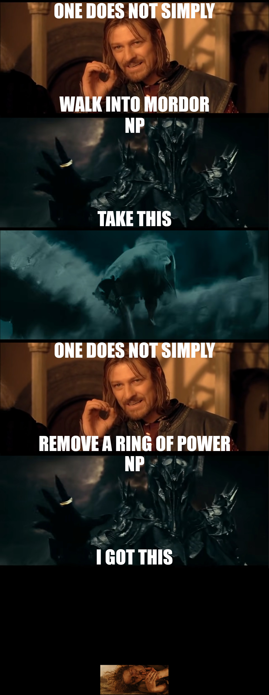

Recently, I gave a company-internal talk for mostly non-techies about cryptography fundamentals and their applications. On the basics side, I covered encryption (symmetric), hashing and signing (symmetric, asymmetric) with relatable analogies. I skipped asymmetric encryption both due to time constraints and lack of a good analogy. After the talk, a fellow developer asked me, whether I'd know a good analogy for asymmetric encryption and we both did not know a single one!
This bothered me quite a bit. Eventually, I came up with the story below. It's not a "real world" analogy, but at least builds on top of the accessible pop culture that is "Lord of the Rings":
Imagine, besides the One Ring ("private key"), Sauron mass-forged further, cheap knock-off rings ("public key") with the following properties:
Sauron spreads those cheap rings everywhere, all over Middle-earth, and widely announces what power those rings grant. But most people don't really like Sauron! They don't see the point in equipping one of those rings just to need to walk into Mordor, where the very air you breathe is a poisonous fume, and ask Sauron to remove the ring from their finger.
In Isengard, the young wizard Saruman, a good buddy of Sauron, studies orc nutrition. Saruman made a break-through discovery that could lead to orcs being able to march in broad daylight ("message")! He wants to send a messenger and tell Sauron about it, but all paths to Mordor are roamed by humans, elves and dwarves capturing or killing anyone who tries to sneak past. So, Saruman ("sender") picks up one of those mass-forged rings littering around everywhere and forces a messenger to put it on ("encrypted message").
At last, the messenger makes their way to Sauron in Mordor ("recipient"), unnoticed. Sauron then removes the ring, gets to know the great discovery, and everyone lived happily thereafter!
(contains graphic scene from the movies)

Screenshots taken from various Youtube clips of "The Lord of the Rings" by Peter Jackson.